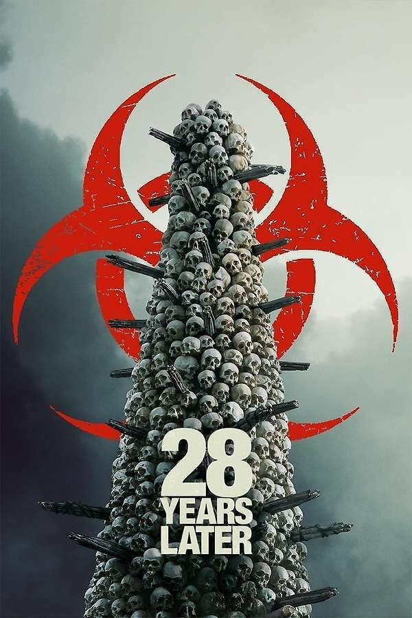
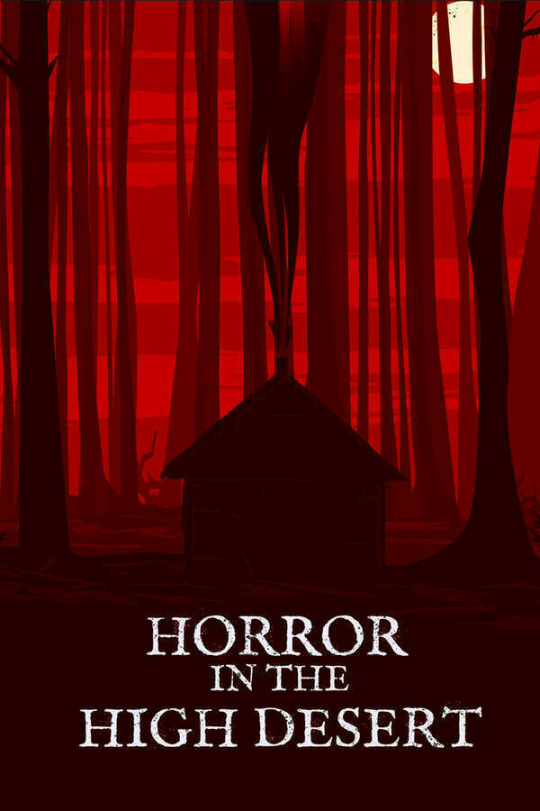
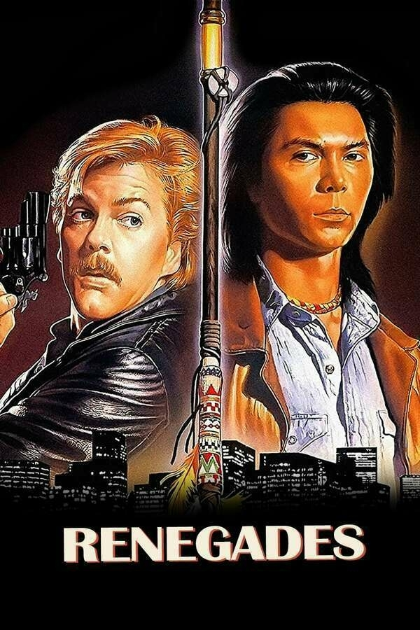
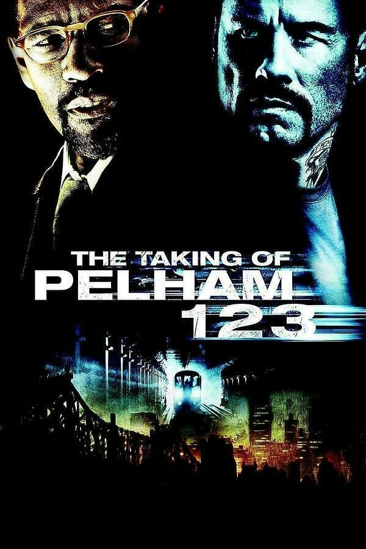
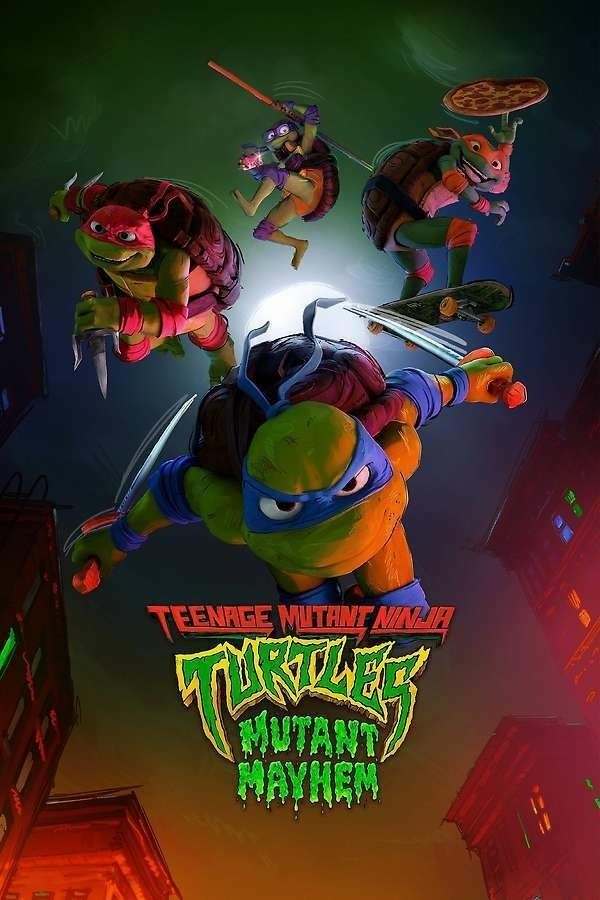

With Honors, 1994 - ★★★
Your standard feel good 1990s movie you’d find on television during a random statue day afternoon. Joe Pesci is a delight the rest is kind of an inferior Good Will Hunting three years early.
Springsteen: Deliver Me from Nowhere, 2025 - ★★★★
I love Springsteen, so a biased review. If I didn’t enjoy the music and know more of the backstory it’d be a lower rating.

Finished reading: A Marriage at Sea by Sophie Elmhirst 📚
Finally nice to have a spot to use the hammock that was bought during the pandemic and sat unused for years.

Finished reading: Death at the White Hart by Chris Chibnall 📚


Nic Hoffmann: “We need cultural moments. We need permanence. A society that forgets too quickly invites easy rewriting. In an era of censorship, content removal, demonetization, and deletion, controversial works must exist in owned form. VHS may have been clunky and fragile, but no one could patch, delete, or erase it without leaving scars. It embodied permanence in a way digital platforms refuse. Streaming feels convenient but unstable; tapes remain inconvenient but reassuring.”
Jurassic World Rebirth, 2025 - ★★ (contains spoilers)
This review may contain spoilers.
The first death was almost as satisfying as Peter Stormare’s in The Lost World.
But really this is a movie where the big bad dinosaur is what I drew in kindergarten and that kid condemned the cute little dinosaur to death.
F1, 2025 - ★★★
If I knew I’d spend 2 1/2 to watch Lewis Hamilton lose at the end of the Abu Dhabi Grand Prix I would’ve watched the 2021 replay. But that wouldn’t have had Hans Zimmer scoring it.
Jurassic World Dominion, 2022 - ★½
They spent all the time coming up with Easter eggs and forgot to make a fun plot

Finished reading: Clown in a Cornfield by Adam Cesare 📚
Kraven the Hunter, 2024 - ★½
The number of accents ATJ has in this movie is basically all you need to know about its quality
28 Years Later, 2025 - ★★★ (contains spoilers)

This review may contain spoilers.
Umm…it’s a really fucked up coming of age tale and 90% of it is good, the other 10%, well…
- What the hell Ralph Fiennes, giving the kid his mother’s skull to put on top of your giant skull memorial is a bit much.
- The hell is that ending of the track suit mafia showing up. I did appreciate the scoring but again, bit too much.
Really though we should probably talk about the fact that in a movie with in my count zero minority survivors, the big bad infected alpha is a black guy. C’mon now.
Alys Fowler: “For that is the thing about bogs: they are not hugely interested in wowing you. The mountains have good views and the forest has majesty; the sand dunes sculpture and the wildflower meadow an easy romance. But the bog is quite happy to be passed over – it will share its best secrets only with those who carefully tiptoe in and are patient enough to wait a while to see what comes out once they have settled down.”

Finished reading: Washita Love Child: The Rise of Indigenous Rock Star Jesse Ed Davis by Douglas K. Miller 📚
Good Night, and Good Luck, 2025 - ★★½
The review is mostly for the camera work, which really ruined the livestream experience. It’s a play, not a movie and too much of the camera work tried to make it into a movie and it simply didn’t work.
Clooney and the cast were great but you missed so much of the theatrical experience when it’s all said and done.
11.22.63, 2016 - ★★½
This would be a higher graded series if the book didn’t exist, but it does and the book is simply far better.
This is missing what really makes the book compelling which is Jake’s internal struggles with the fact he’s living in the past but developing a real life in a time he doesn’t belong while also trying to carry out the reason he’s there in the first place. Instead you have far less character development in the mini-series they leaves a big lack of attachment to the characters. It’s not even that the character development was cut for simplicity’s sake, they add in added complexity throughout the series.
A Complete Unknown, 2024 - ★★★½
It's like Dylan, a bit fuzzy and blurry when it comes to the details and story but Ed Norton's Seeger really is the stand out of the movie. Now I just need someone to make a film of Dylan in the 1970s.

Currently reading: Cod by Mark Kurlansky 📚

Finished reading: Eleven Twenty-two Sixty-three by Stephen King 📚
Really shouldn’t have waited a dozen or so years to read this.
Not one to normally quote anything Black Rock is involved in but an exception here:
“We have more and more conviction that we need people who majored in history or English, in things that have nothing to do with finance or technology,” Goldstein said. “It’s that diversity of thinking and diversity of people and diversity of looking at different ways to solve problems, that really fuels innovation.”
Final Destination Bloodlines, 2025 - ★★★★
Is this a real four star movie? No. Is just a dumb funny movie that plays into all the things that make this franchise a weird dark comedy while providing enough fan service to make having seen the other five worth it? Yes.
“Did you see the notes he put on Canvas?” she wrote, referring to the university’s software platform for hosting course materials. “He made it with ChatGPT.”
“OMG Stop,” the classmate responded. “What the hell?”
Ms. Stapleton decided to do some digging. She reviewed her professor’s slide presentations and discovered other telltale signs of A.I.: distorted text, photos of office workers with extraneous body parts and egregious misspellings.
I’ve used AI two meaningful times:
- To remember the name and director of House of the Devil. It hallucinated multiple movies before producing the correct answer.
- To quickly build an excel formula to drop the lowest three values. It overheated my laptop cause it was wrong.
The Two Popes, 2019 - ★★★★
A decent fictionalized that may be a bit too sentimental when it’s all said and done but a decidedly unique buddy comedy.
Trap, 2024 - ★★★
It’s a bit too long, a tight 90 movie here would’ve been perfect. Regardless it’s a solid weekend movie playing on tv and you watch it just because it’s on kind of film.
Sinners, 2025 - ★★★★
The second half makes up for a weaker first half. The music and visuals are stunning in a lot of respects.
52% of Gen Zers said schools should be required to teach students how to leverage AI.
49% said they believe AI will harm their critical thinking skills.
41% said AI makes them anxious, while 36% said it makes them excited.
The Gen Z lifestyle subsidy isn’t entirely like its Millennial predecessor. Uber was appealing because using an app to instantly summon a car is much easier than chasing down a cab. Ride-hailing apps were destructive for the taxi business, but for most users, they were just convenient. Today’s chatbots also sell convenience by expediting essay writing and meal planning, but the technology’s impact could be even more destabilizing. College students currently signing up for free ChatGPT Plus ahead of finals season might be taking exams intended to prepare them for jobs that the very same AI companies suggest will soon evaporate.
“We didn’t use to have to decide if our students were human, they were all people. But now there’s this skepticism because a growing number of the people we’re teaching are not real. We’re having to have these conversations with students, like, ‘Are you real? Is your work real?’” Maag said. “It’s really complicated, the relationship between the teacher and the student in almost like a fundamental way.”
On TikTok and YouTube, Twitter and Facebook, paranoia circulates freely because it seems easier to indulge in a smaller, more private version of reality with fellow travelers than to come to a shared consensus on why everyday life feels so awful. There is a banal truth in what conspiracy theories offer to their adherents on these platforms: They arise from the powerlessness to enact change in life on a collective or individual level, and what emerges, then, is a feverish hunt for explanations.
A predictable result when using the new AI reality:
Perhaps the biggest takeaway, however, was that prolonged usage seemed to exacerbate problematic use across the board

Finished reading: Victorian Psycho: A Novel by Virginia Feito 📚
As large corporations and algorithms tighten their grip to a clenched fist, I think we’re long past due for a second DIY Media Renaissance. But in order for that to happen, we first need to change our habits and expectations around media consumption—starting with deprogramming this idea that media is something that should be unlimited and available at all times through a digital faucet.

Finished reading: Clear by Carys Davies 📚
Conclave, 2024 - ★★★★½
One of the best shot movies of recent memory, the stills alone are worth the price of admission.
Emilia Pérez, 2024 - ★
This is the musical version of Crash. It's a French guy using any number of stereotypes and tropes in the hopes of making some kind of enlightened movie. But every single time they try to address something serious it breaks out into some of the worst musical numbers I've ever heard. The fact that Karla Sofía Gascón had really bad tweets is actually pretty fitting for this movie.
Find something that treats trans-parenthood with some respect or find a film on cartel violence done by a Mexican director with Mexican actors.
Zoe Saldaña is good in it, but even she has to undermine her part with absolutely ridiculous musical numbers.
The New Rasputins - The Atlantic
Other civilizations have experienced moments like this one. As their empire began to decline in the 16th century, the Venetians began turning to magic and looking for fast ways to get rich. Mysticism and occultism spread rapidly in the dying days of the Russian empire. Peasant sects promoted exotic beliefs and practices, including anti-materialism, self-flagellation, and self-castration. Aristocrats in Moscow and St. Petersburg turned to theosophy, a mishmash of world religions whose Russian-born inventor, Helena Blavatsky, brought her Hindu-Buddhist-Christian-Neoplatonic creed to the United States. The same feverish, emotional atmosphere that produced these movements eventually propelled Rasputin, a peasant holy man who claimed that he had magical healing powers, into the imperial palace. After convincing Empress Alexandra that he could cure her son’s hemophilia, he eventually became a political adviser to the czar.
Indigenous activist Leonard Peltier granted clemency by President Biden | MPR News
“Tribal Nations, Nobel Peace laureates, former law enforcement officials (including the former U.S. Attorney whose office oversaw Mr. Peltier’s prosecution and appeal), dozens of lawmakers, and human rights organizations strongly support granting Mr. Peltier clemency, citing his advanced age, illnesses, his close ties to and leadership in the Native American community, and the substantial length of time he has already spent in prison.”
Horror in the High Desert 2: Minerva, 2023 - ★★★½
It’s scarier than the first throughout but honestly lost the plot. Good found footage bits though.
Horror in the High Desert, 2021 - ★★★

It’s pretty bland for most of the movie. It’s a really good setup and ending though.
Friday the 13th, 2009 - ★★★
You get to get and you get to die and you get to die. But not you Jason.
Death Before Dishonor, 1987 - ★
Random goodwill purchase. Atrocious film, would skip if it was on during a Fox weekend afternoon movie screening in the 90s.
Renegades, 1989 - ★★½

If it was just a basic, forgettable late 80s action movie, one of those movies you'd find on Fox during a slow weekend afternoon when they needed to fill time it'd be fine. But they added Lou Diamond Phillips and an Indigenous plot to make it worse. Floyd Red Crow Westerman is good in a bit part.
The Taking of Pelham 1 2 3, 2009 - ★★

The 1973 version is infinitely better. Denzel and John Travolta do not equal Walter Matthau and Robert Shaw. Plus the entire premise of the film works much better in the pre-Internet New York.
Pros:
- Denzel
- James Gandolfini
Cons:
- 2000s action thriller slo-mo
- 2000s action thriller music
- Robert Shaw hijacked a subway in 1973 and did the crossword. Travolta is just whiny looking at stocks
- The 1973 ending was better than the book’s. This one was much dumber by comparison.
Killers of the Flower Moon, 2023 - ★★★
Both the movie (and the book, albeit to a lesser degree) both want to treat the historical events as a sensational murder mystery that operates in this specific period of the 1920s tied to oil. The murders were part of a much larger process to strip indigenous peoples of land and resources, much of it not tied to events like a house blowing up.
- Lily Gladstone deserves Best Actress
- Jason Isbell was a good kind of creepy and he would have honestly made a better Ernest than Leo.
- Lithgow versus Fraser as dueling attorneys was excellent casting
Teenage Mutant Ninja Turtles: Mutant Mayhem, 2023 - ★★★

The pop culture references feel a little forced at times and have a weird mix of trying to cater to kids and adults curious about the movie. But the animation style is excellent and the movie overall is better than any of the recent versions by a long stretch.